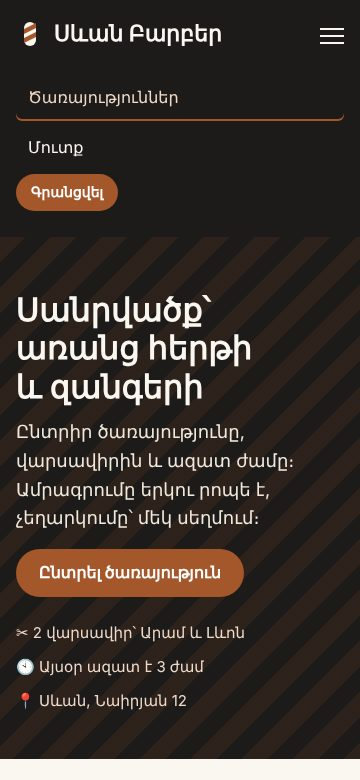
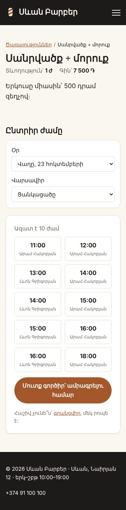

Վերջնական նախագիծ · շաբաթ 4 / 4 · ստուգակետ 4
Վերջին շաբաթը կոդի մասին չէ․ այն մասին է, որ ուրիշը կարողանա բացել, հասկանալ և վստահել քո նախագծին։ Հրապարակված, ստուգված, նկարագրված և պաշտպանված։
Նախագիծը հրապարակված է, ստուգված է hosting-ում, ունի README, որ կարդում է ռեկրուտերը, և դու կարող ես այն պաշտպանել 10–12 րոպեում։ Դիզայնը հղկվում է հիմա՝ երբ գիտես, թե ինչ էջեր ունես։


| # | Ինչ ես անում | Դաս |
|---|---|---|
| 1 | Production՝ APP_DEBUG=false, APP_ENV=production, document root՝ public/, cache-եր | PHP 18, 22 |
| 2 | Smoke test hosting-ում՝ docs/smoke-test.md, գրիր ինչ ստացար | PHP 22 |
| 3 | Demo հաշիվ՝ սահմանափակ դերով, գաղտնաբառը՝ .env-ից, ոչ seeder-ի կոդից | PHP 22 |
| 4 | README՝ demo, GIF, «The hard part», «Security decisions», «How I used AI» | PHP 4, 22 |
| 5 | Հասանելիություն․ Lighthouse ≥ 90, ամեն էջ 360px լայնությամբ, ստեղնաշարով | HTML 4, 14, 23 |
| 6 | Դիզայն․ քո գույները և տառատեսակը (եթե kit-ից ես սկսել) | HTML 19 |
| 7 | Պաշտպանության պլան՝ docs/defense-plan.md, փորձ ժամացույցով | PHP 24 |
| 8 | Պահոցը՝ GitHub պրոֆիլում ամրացված, LinkedIn-ի Featured-ում | PHP 22, 23 |
## The hard part ⭐ — կրկնակի ամրագրման արգելք
Միամիտ լուծումը՝ «ստուգիր, որ ժամն ազատ է, ապա ավելացրու ամրագրում», ունի պահ երկու քայլի միջև,
երբ երկրորդ հարցումը նույնպես տեսնում է ժամը ազատ։ PHP-ում այդ պահը փակելը դժվար է, բազայում՝ մեկ տող․
```php
// bookings միգրացիա
$table->unsignedBigInteger('active_slot_id')->nullable()->unique();
```
Ակտիվ ամրագրման դեպքում `active_slot_id = time_slot_id`, չեղարկելիս՝ `NULL`։ UNIQUE ինդեքսը թույլ է տալիս
շատ `NULL`, ուստի չեղարկված ժամը կարելի է նորից ամրագրել, իսկ երկու ակտիվ ամրագրում նույն ժամին բազան չի ընդունի։
`BookingService::book()`-ը բռնում է `UniqueConstraintViolationException`-ը և վերադարձնում
«Այս ժամը հենց նոր զբաղեցրեցին»։
Ինչու ոչ պարզապես `UNIQUE(time_slot_id)`․ այդ դեպքում չեղարկված ամրագրման տողը ընդմիշտ կզբաղեցներ ժամը,
և կամ պետք կլիներ ջնջել այն (կորչում է պատմությունը), կամ ժամը այլևս չէր ազատվի։
Երկրորդ սահմանը՝ մեկ հաճախորդին առավելագույնը 3 ակտիվ ամրագրում։ Այստեղ UNIQUE չի օգնի, ուստի
տրանզակցիայում կողպում եմ հաճախորդի տողը (`lockForUpdate`)․ նույն հաճախորդի երկու ներդիրի հարցումները
հաշվում են ամրագրումները հերթով, ոչ միաժամանակ։
**Ինչպես եմ ստուգել։** 6 տարբեր հաճախորդ ուղարկում են `POST /bookings` նույն ժամի համար զուգահեռ (4 PHP worker)․
միշտ 1 հաջողություն և 5 «զբաղեցրեցին»։ HeidiSQL-ում նույն `active_slot_id`-ով ձեռքով `INSERT`-ը
ստանում է `Duplicate entry`։ Մանրամասները՝ [docs/smoke-test.md](docs/smoke-test.md)։Ամբողջ README-ն՝ README.md։ Ուշադրություն դարձրու «Security decisions»-ին․ ամեն կետ կոդում է, և պաշտպանության ժամանակ կարող ես բացել այդ տողը։
## How I used AI
- Asked to explain why my first version (`exists()` check, then `create()`) still allowed double bookings in a test with two tabs. The explanation (race between check and insert) led me to the UNIQUE `active_slot_id` idea, which I designed and wrote myself
- Generated the first draft of Armenian validation messages; I rewrote them so that attribute names with the article («անվանումը») don't get a second «-ը»
- Asked for a review of `BookingController`: it pointed out that `cancel()` returned 500 instead of 403 for JSON requests. I switched to `Gate::inspect()` with a message
- Asked how to make the seeder work on hosting without Faker (`composer install --no-dev`)
- Did NOT use AI for `BookingService`, `BookingPolicy` or the migrations{{-- Առանց layout-ի․ եթե սխալը բազայում է, header-ը (auth(), route()) նույնպես կընկնի --}}
<!DOCTYPE html>
<html lang="hy">
<head>
<meta charset="UTF-8">
<meta name="viewport" content="width=device-width, initial-scale=1">
<title>500 — Սևան Բարբեր</title>
<link rel="stylesheet" href="/css/global.css">
<link rel="stylesheet" href="/css/main.css">
</head>
<body>Եթե բազան անհասանելի է, layout-ի auth()-ը նույնպես կընկնի, և Laravel-ը կցուցադրի իր լռելյայն էջը։ Օրինակում ստուգված է՝ սխալ DB_PASSWORD-ով և APP_DEBUG=false-ով բացվում է «Ինչ-որ բան սխալ գնաց», առանց stack trace-ի։
# CSRF․ POST առանց token-ի
$ curl -si -X POST https://…/bookings -d "slot_id=1" | head -1
HTTP/1.1 419 unknown status
# API-ն չի բացահայտում անձնական տվյալներ
$ curl -s "https://…/api/slots?date=2026-10-23&staff=2"
{"data":[{"id":38,"time":"11:00","starts_at":"2026-10-23T11:00:00+04:00","staff":{"id":2,"name":"Արամ Հակոբյան"}}, …],
"meta":{"date":"2026-10-23","label":"ուրբաթ, 23 հոկտեմբերի","count":7}}
# Սխալ պարամետր → 422, ոչ 500
$ curl -s -H "Accept: application/json" "https://…/api/slots?date=2020-01-01"
{"message":"Ընտրված օրը վավեր չէ։","errors":{"date":["Ընտրված օրը վավեր չէ։"]}}## 3. Դժվար ֆունկցիա ⭐ · 3 րոպե
1. Միգրացիա․ `active_slot_id ... ->nullable()->unique()`։ Ինչու `nullable`
2. `BookingService::book()`․ `try { save() } catch (UniqueConstraintViolationException)`
3. Ապացույց․ HeidiSQL-ում `INSERT` նույն `active_slot_id`-ով → `Duplicate entry`
4. 3-ի սահմանը և `lockForUpdate()`․ ինչու այստեղ UNIQUE չի օգնիԱմբողջ պլանը՝ պատրաստված պատասխաններով՝ docs/defense-plan.md։
/.env → 404docs/smoke-test.md-ի ամեն կետ՝ արդյունքովgit log --all --oneline -- .env → դատարկՉես կարողանում բացատրել քո կոդի տողը, կամ իրական գաղտնիք կա պահոցում կամ նրա պատմության մեջ։ Մանրամասները՝ բաժին 04։
| Սխալ | Ինչ է լինում | Ինչպես ճիշտ |
|---|---|---|
APP_DEBUG=true hosting-ում | Սխալի էջը ցույց է տալիս .env-ի արժեքները | APP_DEBUG=false, ապա config:cache |
| Document root՝ նախագծի արմատը | /.env-ը ներբեռնվում է | Document root՝ public/ (PHP Դաս 15, 22) |
| Demo-ի գաղտնաբառը seeder-ի կոդում | Պահոցը կարդացողը մուտք է գործում որպես demo (կամ ադմին) | env('DEMO_PASSWORD'), hosting-ի .env-ում |
| Factory-ներ production seeder-ում | composer install --no-dev → «Class Faker not found» | Demo տվյալները զանգվածներից |
| README-ում պնդում, որ կոդում չկա | Պաշտպանության ժամանակ բացում են ֆայլը | Գրիր միայն այն, ինչ կարող ես ցույց տալ |
| Kit-ի կապույտ գույնը | «Ձևանմուշից» տեսք | Փոխիր main.css-ի «Շերտ 1»-ը |
| Ներկայացումը առանց փորձի | 15 րոպե ցուցադրություն, 0 րոպե դժվար ֆունկցիա | Ժամացույց, պլանը՝ defense-plan.md |
| Եթե խրվել ես | Նայիր |
|---|---|
| Deploy, smoke test, README | PHP Դաս 22, Տնային 22 |
| Հարցազրույց և նախագծի ներկայացում | PHP Դաս 24 |
| Lighthouse, հասանելիություն | HTML Դաս 23 |